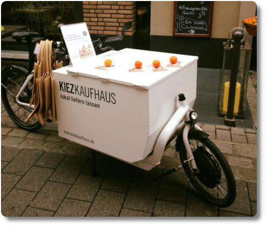

Das Kiezkaufhaus in Wiesbaden
Die Wiesbadener haben seit einiger Zeit etwas, dass ich auch gerne mal ausprobieren würde: Den Online-Shop “kiezkaufhaus” für Waren von mittlerweile mehr als 20 Wiesbadener Einzelhändlern, Herstellern und Erzeugern.
Ein schickes Lastenrad vom Kiezkaufhaus (Quelle: Kietzkaufhaus Facebook-Seite):
Bestellt man etwas auf http://www.kiezkaufhaus.de, so packt der betreffende Händler die Ware(n) in eine stabile Stofftasche, die dann von einem Fahrradkurier abgeholt und zu einem zentralen Büro gebracht wird. Dort werden Taschen für jeden einzelnen Kunden fertig gepackt und diese mit dem Rad zum Kunden gebracht. Wer bis 14 Uhr bestellt, bekommt seine Lieferung noch am gleichen Tag.
Die Idee ist super und ich würde sie unheimlich gern unterstützen. Denn die Vorteile, die sich durch das Projekt ergeben, liegen auf der Hand (Zitat vom Kiezkaufhaus):
-
Gut für’s städtische Leben
Fachgeschäfte prägen den Charme der Innenstadt und es gilt, sie zu erhalten. Leider haben viele von ihnen in den letzten Jahren geschlossen. Den frei gewordenen Platz haben sich dann oft Ketten erobert, die mitunter wenig zur individuellen Stadtgestaltung beitragen. Kaufen wir online bei lokalen Händlern, bleibt der Umsatz in unserer Stadt.
-
Gut für die Stadt-Finanzen
Mehr als 500 000 Euro gehen einer Stadt in der Größenordnung Wiesbadens verloren, weil durch den Distanz-Handel die Gewerbesteuer nicht in der Stadt bleibt. Dabei sind weitere ökonomische Aspekte wie zum Beispiel Arbeitsplätze, die im Einzelhandel entstehen oder wegfallen noch nicht berücksichtigt.
-
Gut für die Stadt-Finanzen
Mehr als 500 000 Euro gehen einer Stadt in der Größenordnung Wiesbadens verloren, weil durch den Distanz-Handel die Gewerbesteuer nicht in der Stadt bleibt. Dabei sind weitere ökonomische Aspekte wie zum Beispiel Arbeitsplätze, die im Einzelhandel entstehen oder wegfallen noch nicht berücksichtigt.
Die Lieferpauschale beträgt gerade mal 5 Euro. Das kann man wirklich verkraften, finde ich, und man spart sich mit dem Lieferdienst auch das Park-Ticket für den dicken SUV. 🙂 Win-Win, würde ich sagen. Die erste Lieferung ist sogar versandkostenfrei.